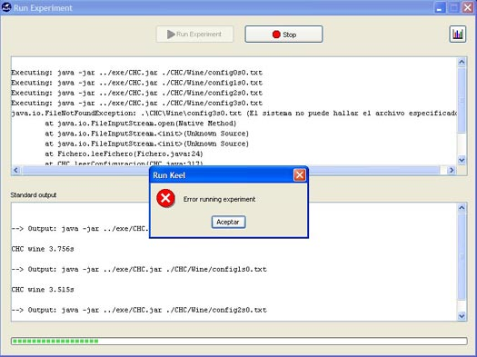

Errors during execution
During execution of a experiment can appears some errors due to an incorrect algorithm, a file missing or various reasons. If an error happens, the execution is stopped, because it can affect to others algorithms that will be executed later.
In the top text area of RunKeel's window appear information about the detected error. This information is very useful to correct them, and if the user can repair the error, replace bad files, missing files, etc, and press "Run Experiment" button, the execution will continue at this point, because isn't necessary to execute all the experiment right from the beginning.
Important for algorithm's developers: The algorithms must return value 0 if the execution is correct, otherwise if a problem occurs must return a non 0 value. Also, error messages must be written in standard error file (depends programming language), to show the message in text area.
